🗿 阿纳克遗迹:探险队长
Lost Ruins of Arnak: Expedition Leaders · 设计:Mín & Elwen · Czech Games Edition 出版/一刻馆代理发行(简体中文) · 1–4 人扩展(简体中文规则书全文转录,含单人变体)
本页整理自微信公众号「桌游怎么玩」《【桌游规则】阿纳克遗迹-扩展包,探险队长,完整版》所载官方简体中文规则书扫描件(24 图),逐页全文转录,扫描图随文嵌入——点击任意图片即可放大查看。规则内容归 Mín & Elwen、Czech Games Edition 及版权方所有(简体中文版:一刻馆),转录仅供个人学习查阅。基础游戏规则见本站《阿纳克遗迹》规则页。
整理说明:原帖扫描封面排在末尾,本页已按印刷页码重排为「封面+页 2~23+无页码衬页(新图标速查)」,全套完整无缺页;正文为简体照录;图示小字无法辨认处以〔图:…〕/〔图标:…〕/〔?〕标注,未按常识补全,文字与扫描图不符时以图为准。
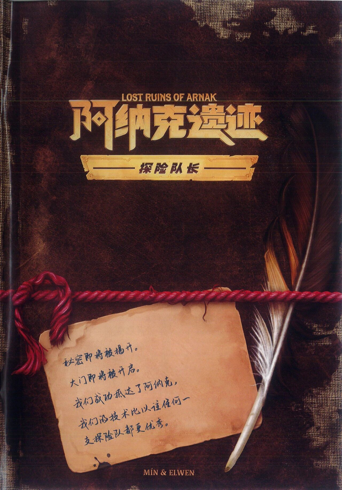
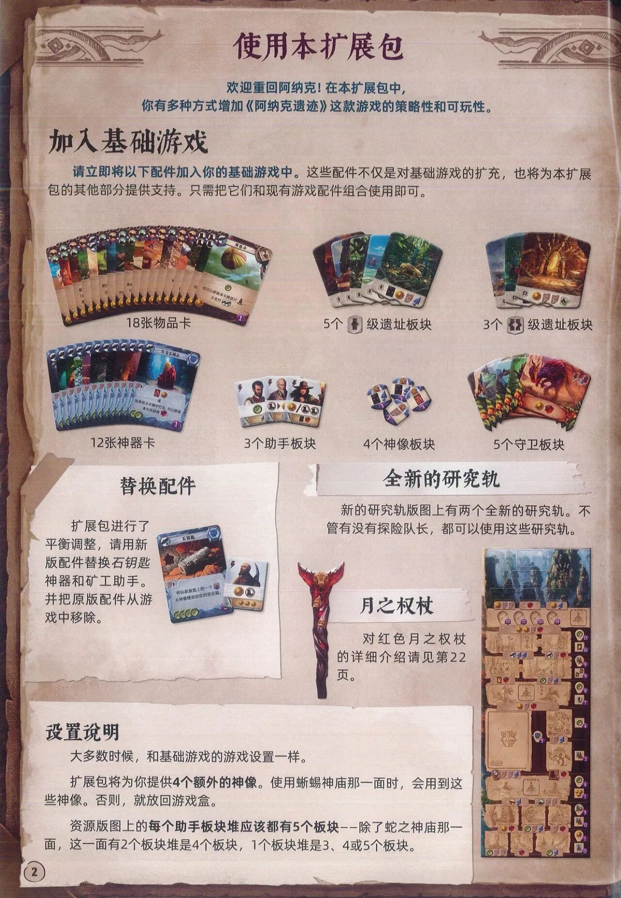
使用本扩展包
欢迎重返阿纳克!在本扩展包中,你有多种方式增加《阿纳克遗迹》这款游戏的策略性和可玩性。
加入基础游戏
请立即将以下配件加入你的基础游戏中。这些配件不仅是对基础游戏的扩充,也将为本扩展包的其他部分提供支持。只需把它们和现有游戏配件组合使用即可。
〔图:各配件照片,图下为说明文字〕
- 18张物品卡
- 5个〔图标:遗址等级(盾形徽记内有1个记号)〕级遗址板块
- 3个〔图标:遗址等级(盾形徽记内有2个记号)〕级遗址板块
- 12张神器卡
- 3个助手板块
- 4个神像板块
- 5个守卫板块
替换配件
扩展包进行了平衡调整,请用新版配件替换石钥匙神器和矿工助手。并把原版配件从游戏中移除。
〔图:新版配件卡片照片,左侧蓝色神器卡卡名为「石钥匙」〕
全新的研究轨
新的研究轨版图上有两个全新的研究轨。不管有没有探险队长,都可以使用这些研究轨。
〔图:左侧为红色权杖实物照片,右侧为新研究轨版图照片〕
月之权杖
对红色月之权杖的详细介绍请见第22页。
设置说明
大多数时候,和基础游戏的游戏设置一样。
扩展包将为你提供4个额外的神像。使用蜥蜴神庙那一面时,会用到这些神像。否则,就放回游戏盒。
资源版图上的每个助手板块堆应该都有5个板块——除了蛇之神庙那一面,这一面有2个板块堆是4个板块,1个板块堆是3、4或5个板块。
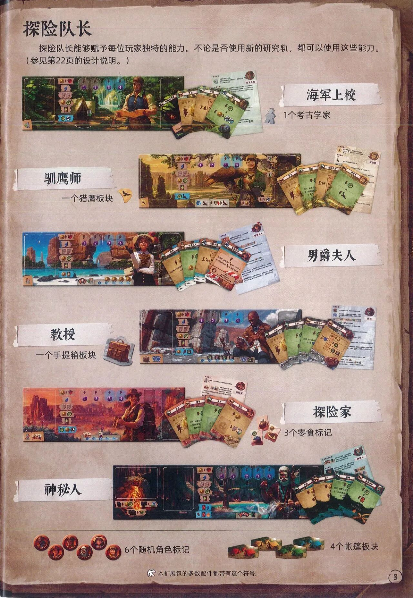
探险队长(配件总览)
探险队长能够赋予每位玩家独特的能力。不论是否使用新的研究轨,都可以使用这些能力。(参见第22页的设计说明。)
〔图:以下每组为一名探险队长的玩家板、卡牌及专属配件照片,队长的名牌为胶带贴纸样式〕
- 「海军上校」:1个考古学家〔图:考古学家小人模型照片〕
- 「驯鹰师」:一个猎鹰板块〔图:盾形板块,上有飞鹰图案〕
- 「男爵夫人」
- 「教授」:一个手提箱板块〔图:手提箱图案板块照片〕
- 「探险家」:3个零食标记〔图:零食标记实物照片〕
- 「神秘人」
- 6个随机角色标记
- 4个帐篷板块
〔图标:鹰头徽记(深色圆形底上的白色鹰头)〕本扩展包的多数配件都带有这个符号。
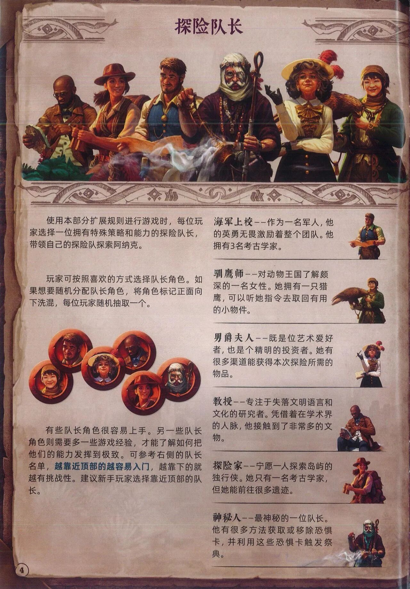
探险队长(六位队长)
〔图:六位探险队长的插画,并排而立〕
使用本部分扩展规则进行游戏时,每位玩家选择一位拥有特殊策略和能力的探险队长,带领自己的探险队探索阿纳克。
玩家可按照喜欢的方式选择队长角色。如果想要随机分配队长角色,将角色标记正面向下洗混,每位玩家随机抽取一个。
〔图:六个圆形角色标记,印有各队长的肖像〕
有些队长角色很容易上手。另一些队长角色则需要多一些游戏经验,才能了解如何把他们的能力发挥到极致。可参考右侧的队长名单,越靠近顶部的越容易入门,越靠下的就越有挑战性。建议新手玩家选择靠近顶部的队长。
「海军上校」
作为一名军人,他的英勇无畏激励着整个团队。他拥有3名考古学家。
〔图:海军上校的肖像〕
「驯鹰师」
对动物王国了解颇深的一名女性。她拥有一只猎鹰,可以听她指令去取回有用的小物件。
〔图:驯鹰师肩上停着猎鹰的肖像〕
「男爵夫人」
既是位艺术爱好者,也是个精明的投资者。她有很多渠道能获得本次探险所需的物品。
〔图:男爵夫人的肖像〕
「教授」
专注于失落文明语言和文化的研究者。凭借着在学术界的人脉,他接触到了非常多的文物。
〔图:教授坐着阅读的肖像〕
「探险家」
宁愿一人探索岛屿的独行侠。她只有一名考古学家,但她能前往很多遗迹。
〔图:探险家的肖像〕
「神秘人」
最神秘的一位队长。他有很多方法获取或移除恐惧卡,并利用这些恐惧卡触发祭典。
〔图:神秘人的肖像〕
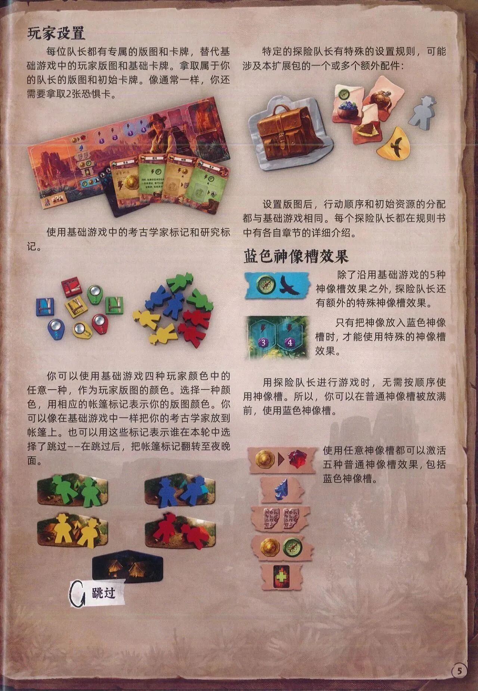
玩家设置
每位队长都有专属的版图和卡牌,替代基础游戏中的玩家版图和基础卡牌。拿取属于你的队长的版图和初始卡牌。像通常一样,你还需要拿取2张恐惧卡。
〔图:专属玩家版图与初始卡牌的示例照片〕
使用基础游戏中的考古学家标记和研究标记。
〔图:四种颜色的考古学家标记(人形)与研究标记(水滴形)〕
你可以使用基础游戏四种玩家颜色中的任意一种,作为玩家版图的颜色。选择一种颜色,用相应的帐篷标记表示你的版图颜色。你可以像在基础游戏中一样把你的考古学家放到帐篷上。也可以用这些标记表示谁在本轮中选择了跳过——在跳过后,把帐篷标记翻转至夜晚面。
〔图:四色帐篷标记,正面为白天面的考古学家图案;下方一个翻转至夜晚面的黑色帐篷标记,旁有手写箭头标注「跳过」〕
特定的探险队长有特殊的设置规则,可能涉及本扩展包的一个或多个额外配件:
〔图:特殊配件示例照片:箱形配件、宝物卡、人形标记与猎鹰形标记等〕
设置版图后,行动顺序和初始资源的分配都与基础游戏相同。每个探险队长都在规则书中有各自章节的详细介绍。
蓝色神像槽效果
〔图:蓝色神像槽图示,印有〔图标:指南针〕与〔图标:飞鸟〕图案〕
除了沿用基础游戏的5种神像槽效果之外,探险队长还有额外的特殊神像槽效果。
〔图:两个蓝色神像槽,分别标有数字3和4〕
只有把神像放入蓝色神像槽时,才能使用特殊的神像槽效果。
用探险队长进行游戏时,无需按顺序使用神像槽。所以,你可以在普通神像槽被放满前,使用蓝色神像槽。
〔图:五个神像槽的图示,依次为〔图标:红色宝石〕、〔图标:蓝色宝石〕、〔图标:石板〕、〔图标:硬币与指南针〕、〔图标:植物〕〕
使用任意神像槽都可以激活五种普通神像槽效果,包括蓝色神像槽。
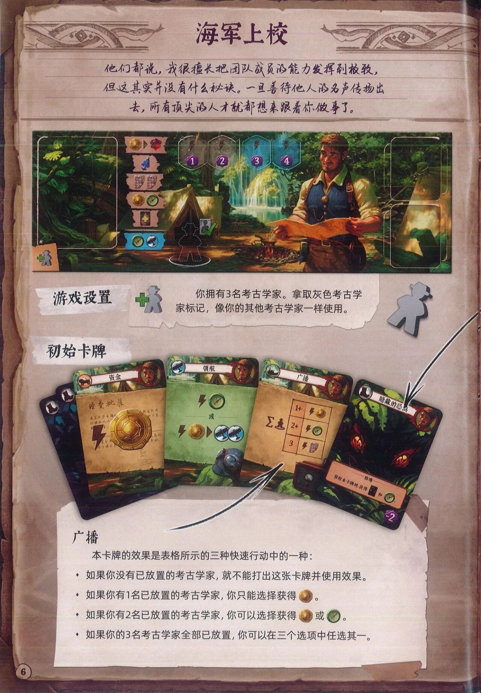
海军上校
他们都说,我很擅长把团队成员的能力发挥到极致,
但这其实并没有什么秘诀。一旦善待他人的名声传扬出
去,所有顶尖的人才就都想来跟着你做事了。
〔图:跨页大插画——海军上校站在营地中查看地图;其左侧为玩家版图局部,可见标有 1、2、3、4 的四个槽位及若干资源图标;插画左下角有一个带加号的考古学家小图标〕
游戏设置
〔图标:绿色加号与灰色考古学家米宝〕
你拥有3名考古学家。拿取灰色考古学家标记,像你的其他考古学家一样使用。
〔图:页面右侧绘有一枚戴帽子的灰色考古学家米宝〕
初始卡牌
〔图:四张初始卡牌呈扇形摆放,卡牌右上角均印有海军上校的头像;一个黑色箭头从页面右上方指向最右一张卡牌〕
- 「资金」〔图标:吉普车〕——卡面为一张写有「经费批准」字样的文件,其上绘有〔图标:闪电〕与金币图案。
- 「领航」〔图标:飞机〕——卡面上方为〔图标:闪电〕〔图标:指南针〕,中间为「或」,下方为〔图标:闪电〕〔图标:金币〕▶〔图标:飞机〕〔图标:飞机〕。
- 「广播」〔图标:轮船〕——卡面为一张表格,表格左侧行首标有 Σ 与〔图标:考古学家米宝〕;三行分别为:1+ 对应〔图标:闪电〕〔图标:金币〕;2+ 对应〔图标:闪电〕〔图标:指南针〕;3 对应〔图标:闪电〕〔图标:粉红色石板状代币〕。
- 「隐藏的恐惧」〔图标:靴子〕——卡面绘有丛林中一双发红光的眼睛;下方文字框:——特殊——移除本卡牌时,获得〔图标:恐惧〕和〔图标:指南针〕。卡面左下角有一个紫色的「-2」标记。
广播
本卡牌的效果是表格所示的三种快速行动中的一种:
- 如果你没有已放置的考古学家,就不能打出这张卡牌并使用效果。
- 如果你有1名已放置的考古学家,你只能选择获得〔图标:金币〕。
- 如果你有2名已放置的考古学家,你可以选择获得〔图标:金币〕或〔图标:指南针〕。
- 如果你的3名考古学家全部已放置,你可以在三个选项中任选其一。
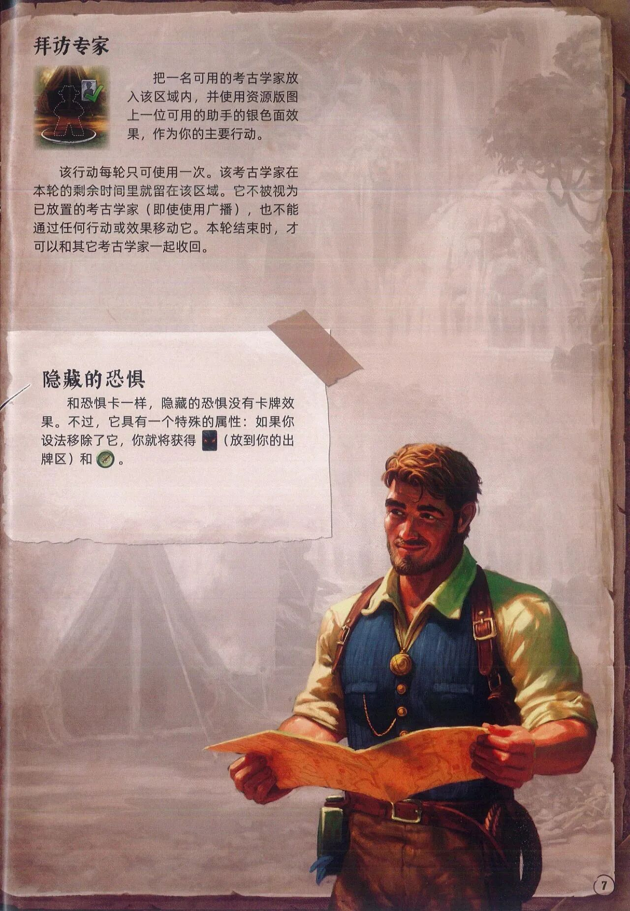
拜访专家
〔图:营地地面上一圈虚线勾勒的考古学家轮廓,其旁有一张助手卡图案与绿色对勾〕
把一名可用的考古学家放入该区域内,并使用「资源版图」上一位可用的助手的银色面效果,作为你的主要行动。
该行动每轮只可使用一次。该考古学家在本轮的剩余时间里就留在该区域。它不被视为已放置的考古学家(即使使用「广播」),也不能通过任何行动或效果移动它。本轮结束时,才可以和其它考古学家一起收回。
隐藏的恐惧
〔图:一段胶带将本节纸条贴在页面上〕
和恐惧卡一样,「隐藏的恐惧」没有卡牌效果。不过,它具有一个特殊的属性:如果你设法移除了它,你就将获得〔图标:恐惧〕(放到你的出牌区)和〔图标:指南针〕。
〔图:页面下方大半为海军上校手持地图的人物插画〕
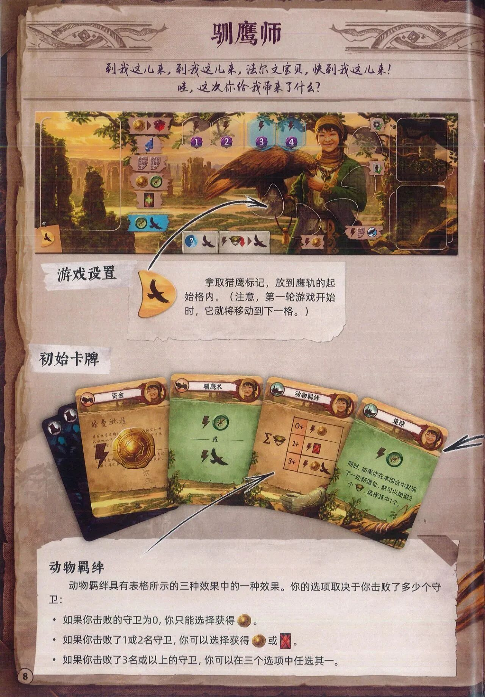
驯鹰师
到我这儿来,到我这儿来,法尔文宝贝,快到我这儿来!
哇,这次你给我带来了什么?
〔图:整页大图,展示玩家板上的「驯鹰师」区域:一条横向鹰轨,轨上印有编号 1、2、3、4 的格位,各格位上方印有小图标;鹰轨左侧及下方散布若干资源图标与卡牌槽;下方另有两枚小板块,分别印有〔图标:问号与猎鹰〕和〔图标:红色图标、闪电与猎鹰〕。一支弯曲箭头从「游戏设置」说明框指向鹰轨上〔图标:猎鹰〕所在位置〕
游戏设置
〔图标:箭头形猎鹰标记〕拿取猎鹰标记,放到鹰轨的起始格内。(注意,第一轮游戏开始时,它就将移动到下一格。)
初始卡牌
〔图:扇形排开的四张卡牌,自左至右为「资金」「驯鹰术」「动物羁绊」「追踪」。最左侧是一张背面朝上的深色卡,无卡名;「资金」卡面为经费批准文件图案,印有〔图标:闪电〕与〔图标:金币〕,与第 6 页「资金」卡相同。「驯鹰术」卡上印有上下两行效果,中间以「或」字相连:上行为〔图标:闪电〕加〔图标:指南针〕,下行为〔图标:闪电〕加〔图标:猎鹰〕。「动物羁绊」卡上印有表格:左侧为〔图标:Σ形计数符号,旁有猎鹰头图标〕,表格三行分别标作 0+、1+、3+,各行行首均有〔图标:闪电〕,右侧对应不同图标组合(0+ 行为〔图标:金币〕;1+ 行为〔图标:红色方形图标〕;3+ 行为〔图标:金币〕加〔图标:猎鹰,鸟形剪影〕)。「追踪」卡顶部印有〔图标:闪电〕与〔图标:指南针〕,卡面文字:「同时,如果你在本回合中发现了一处新遗址,就可以抽取2个〔图标:猎鹰头图标〕,选择其中1个。」右侧一支箭头指向「追踪」卡。〕
动物羁绊
动物羁绊具有表格所示的三种效果中的一种效果。你的选项取决于你击败了多少个守卫:
- 如果你击败的守卫为0,你只能选择获得〔图标:金色圆形图标〕。
- 如果你击败了1或2名守卫,你可以选择获得〔图标:金色圆形图标〕或〔图标:红色方形图标,与「动物羁绊」卡表格 1+ 行所示相同〕。
- 如果你击败了3名或以上的守卫,你可以在三个选项中任选其一。
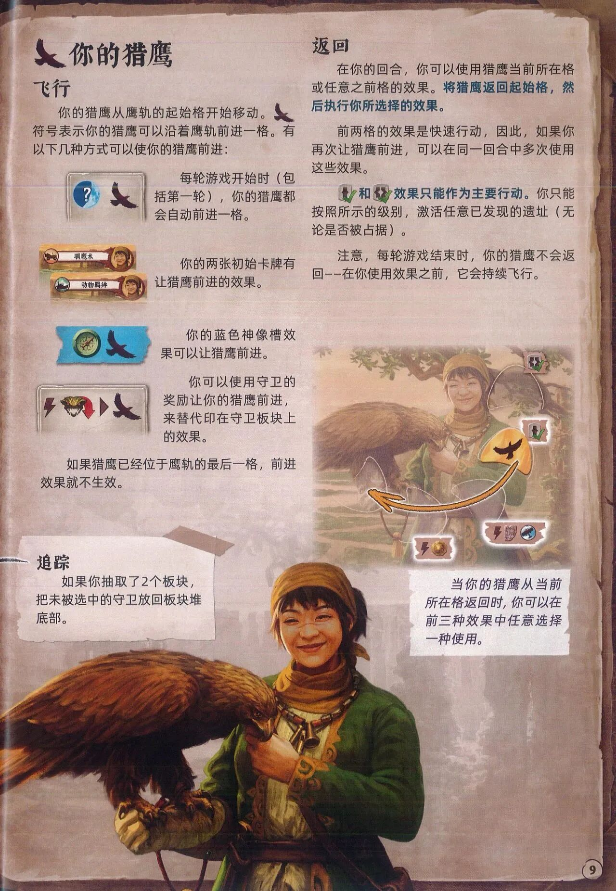
你的猎鹰
〔图标:猎鹰,位于页首标题左侧〕
飞行
你的猎鹰从鹰轨的起始格开始移动。〔图标:猎鹰〕符号表示你的猎鹰可以沿着鹰轨前进一格。有以下几种方式可以使你的猎鹰前进:
- 〔图:一块小板块,左半为蓝底〔图标:问号〕,右半为猎鹰剪影〕每轮游戏开始时(包括第一轮),你的猎鹰都会自动前进一格。
- 〔图:「驯鹰术」「动物羁绊」两张初始卡牌的缩略图〕你的两张初始卡牌有让猎鹰前进的效果。
- 〔图:蓝色神像槽图案与猎鹰剪影〕你的蓝色神像槽效果可以让猎鹰前进。
- 〔图:一块小板块,印有〔图标:闪电〕〔图标:红色守卫图标〕〔图标:向右箭头〕与猎鹰剪影〕你可以使用守卫的奖励让你的猎鹰前进,来代替印在守卫板块上的效果。
如果猎鹰已经位于鹰轨的最后一格,前进效果就不生效。
追踪
如果你抽取了2个板块,把未被选中的守卫放回板块堆底部。
返回
在你的回合,你可以使用猎鹰当前所在格或任意之前格的效果。将猎鹰返回起始格,然后执行你所选择的效果。
前两格的效果是快速行动,因此,如果你再次让猎鹰前进,可以在同一回合中多次使用这些效果。
〔图标:深色向上箭头〕和〔图标:绿色向上箭头〕效果只能作为主要行动。你只能按照所示的级别,激活任意已发现的遗址(无论是否被占据)。
注意,每轮游戏结束时,你的猎鹰不会返回——在你使用效果之前,它会持续飞行。
〔图:驯鹰师人物插图,肩上停着猎鹰;人物右侧上方有一枚小板块,印有〔图标:绿色向上箭头〕;一支黄色大箭头自人物旁的猎鹰标记指向左侧;下方散布数枚小板块,分别印有〔图标:闪电与金色圆形图标〕、〔图标:闪电与Σ形计数符号〕、〔图标:闪电与蓝色图标〕等。旁附说明框:〕
当你的猎鹰从当前所在格返回时,你可以在前三种效果中任意选择一种使用。
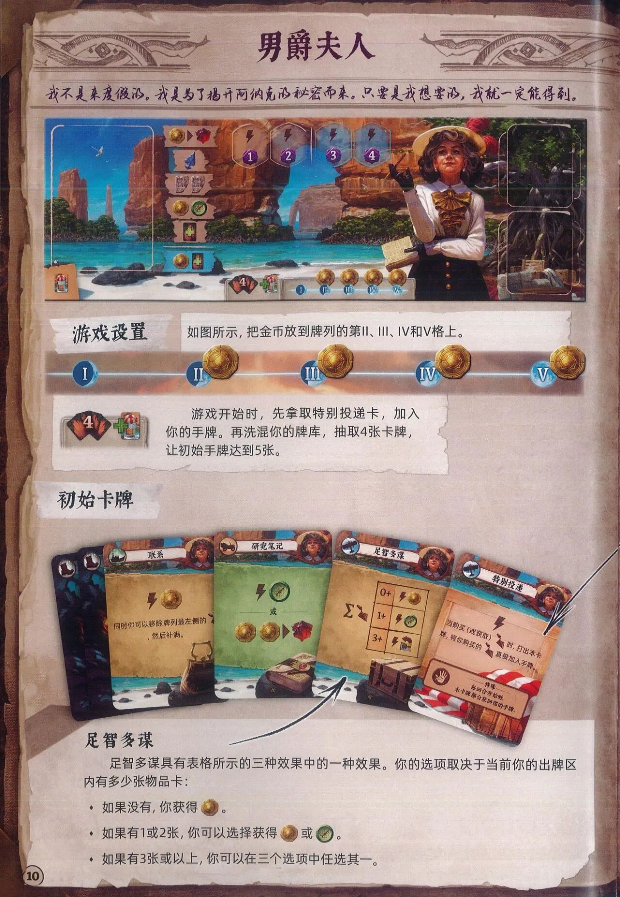
男爵夫人
我不是来度假的。我是为了揭开阿纳克的秘密而来。只要是我想要的,我就一定能得到。
〔图:跨页顶部大图——游戏版图局部的照片式插画:左侧为玩家面板(其上可见若干资源图标、卡牌槽位),中间上方有一排带〔图标:闪电〕的数字格 1、2、3、4,下方为牌列与金币;右侧为「男爵夫人」人物立绘(戴帽女士,手持纸笔)〕
游戏设置
如图所示,把金币放到牌列的第II、III、IV和V格上。
〔图:牌列五格示意图——蓝色圆形单元格依次标 I、II、III、IV、V,第II、III、IV、V格上各放一枚金币〕
〔图:4张卡牌 + 「特别投递」卡〕 游戏开始时,先拿取特别投递卡,加入你的手牌。再洗混你的牌库,抽取4张卡牌,让初始手牌达到5张。
初始卡牌
〔图:四张初始卡牌扇形排列——「联系」「研究笔记」「足智多谋」「特别投递」,每张卡名牌旁均有「男爵夫人」头像,一支手绘箭头从下方「足智多谋」小节指向卡牌。卡面转录如下〕
「联系」(左上角圆形图标:〔图标:船只(较小,不甚清晰)〕)
〔图标:闪电〕〔图标:金币〕
同时你可以移除牌列最左侧的〔图标:棕色箭头状符号——被右侧相邻卡牌遮挡,仅露局部,无法辨认〕,然后补满。
「研究笔记」(左上角圆形图标:〔图标:吉普车〕)
〔图标:闪电〕〔图标:绿色圆形徽记(圈内为罗盘)〕
或
〔图标:金币〕〔图标:金币〕→〔图标:红色多面体状图标〕
「足智多谋」(左上角圆形图标:〔图标:双翼飞机〕)
| Σ〔图标:棕色箭头状符号〕 | |
|---|---|
| 0+ | 〔图标:闪电〕〔图标:金币〕 |
| 1+ | 〔图标:闪电〕〔图标:绿色圆形徽记(圈内为罗盘)〕 |
| 3+ | 〔图标:闪电〕〔图标:棕色弯箭头与箱匣状图标〕 |
「特别投递」(左上角圆形图标:〔图标:双翼飞机〕)
〔图标:闪电(位于首行文字上方)〕
当购买(或获取)〔图标:棕色箭头状符号〕时,打出本卡牌,将你购买的〔图标:棕色箭头状符号〕直接加入手牌。
〔图标:手掌〕
—— 特殊 ——
每回合开始时,本卡牌都会放回你的手牌。
足智多谋
足智多谋具有表格所示的三种效果中的一种效果。你的选项取决于当前你的出牌区内有多少张物品卡:
- 如果没有,你获得〔图标:金币〕。
- 如果有1或2张,你可以选择获得〔图标:金币〕或〔图标:绿色圆形徽记(圈内为罗盘)〕。
- 如果有3张或以上,你可以在三个选项中任选其一。
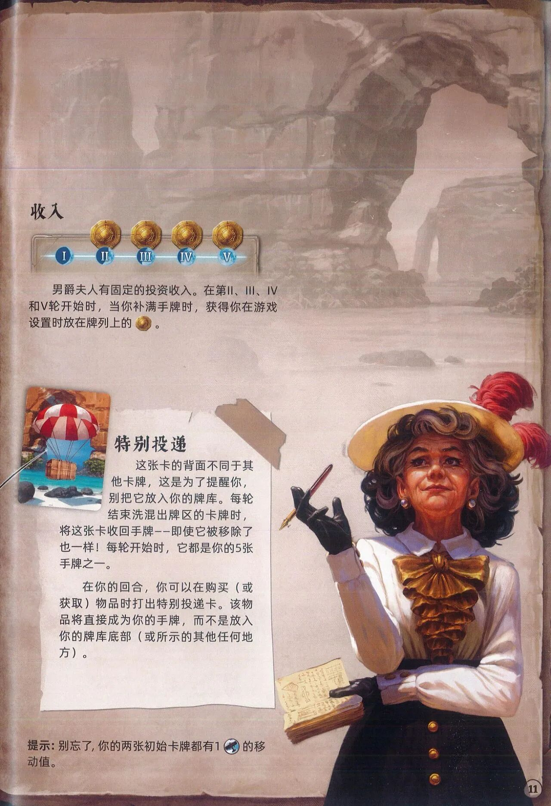
收入与特别投递
〔图:牌列五格示意图——蓝色圆形单元格依次标 I、II、III、IV、V,第II、III、IV、V格上各有一枚金币〕
男爵夫人有固定的投资收入。在第II、III、IV和V轮开始时,当你补满手牌时,获得你在游戏设置时放在牌列上的〔图标:金币〕。
特别投递
〔图:「特别投递」卡面图——红白条纹降落伞吊着木箱,降落在有岩石拱门的海湾;一支手绘箭头从页面左缘指向该卡〕
这张卡的背面不同于其他卡牌,这是为了提醒你,别把它放入你的牌库。每轮结束洗混出牌区的卡牌时,将这张卡收回手牌——即使它被移除了也一样!每轮开始时,它都是你的5张手牌之一。
在你的回合,你可以在购买(或获取)物品时打出特别投递卡。该物品将直接成为你的手牌,而不是放入你的牌库底部(或所示的其他任何地方)。
提示:别忘了,你的两张初始卡牌都有1〔图标:圆形徽记内为双翼飞机〕的移动值。
〔图:页面右侧整幅为「男爵夫人」人物立绘——戴羽毛帽、黑手套,执笔与笔记本的女士〕
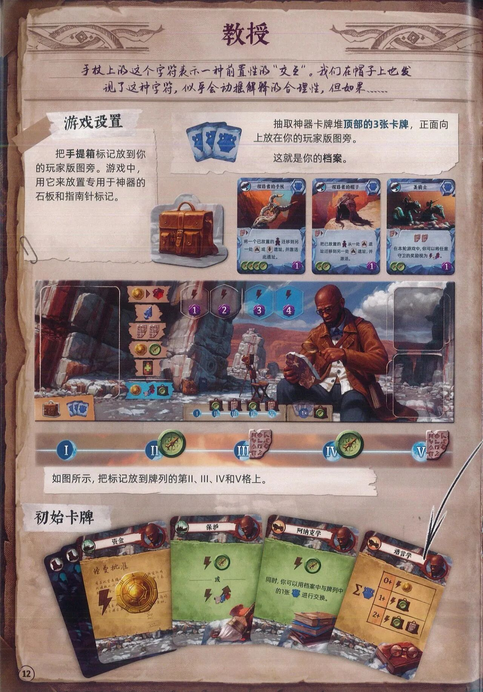
教授
卡牌上的这个字符表示一种前置性的「交互」。我们在帽子上也发现了这种字符,似乎会动摇解释的合理性,但如果……
游戏设置
把手提箱标记放到你的玩家版图旁。游戏中,用它来放置专用于神器的石板和指南针标记。
〔图:棕色皮质手提箱标记的图案,置于左侧文字块下方〕
抽取神器卡牌堆顶部的3张卡牌,正面向上放在你的玩家版图旁。
这就是你的档案。
〔图:三张并排展示的神器卡牌,卡面文字如下〕
- 「探路者的手杖」:将一个已放置的〔图标:探险队员小人〕迁移到另一处〔图标:遗址板块(山形与向上箭头)〕或〔图标:遗址板块(向下箭头与红色小人)〕遗址,并激活此遗址。文字框左上角有〔图标:石板〕及▶箭头;卡面下方有〔图标:绿色罗盘〕×4,右下角费用 1。
- 「探路者的帽子」:把已放置的〔图标:探险队员小人〕从一处〔图标:遗址板块(山形与向上箭头)〕遗址迁移到另一处〔图标:遗址板块(山形与向上箭头)〕遗址,并激活。文字框左上角有〔图标:石板〕及▶箭头;卡面下方有〔图标:绿色罗盘〕×2,右下角费用 1。
- 「圣骑士」:在本轮游戏中,你可以将任意守卫的奖励视为〔图标:闪电〕〔图标:红色小图案,细节无法辨认〕。文字框上方有两个〔图标:石板〕;卡面下方有〔图标:绿色罗盘〕×2,右下角费用 1。
〔图:大幅插画——教授坐在遗迹前翻看手册,左侧为其玩家版图与牌列的摆放示例〕
〔图:牌列示意,一排五个格子:I、II、III、IV、V;第II格与第IV格上放置〔图标:绿色罗盘〕标记,第III格与第V格上放置〔图标:石板〕标记〕
如图所示,把标记放到牌列的第II、III、IV和V格上。
初始卡牌
〔图:四张呈扇形展开的卡牌,自左至右如下〕
- 「资金」:〔图:卡面为一份盖有金色火漆印章的「经费批准」文件插画,上有〔图标:闪电〕;文件上的装饰性手写小字无法辨认〕
- 「保护」:卡面图标为〔图标:闪电〕〔图标:绿色罗盘〕,中间以「或」字分隔线下方为〔图标:闪电〕〔图标:向上箭头与红、蓝色小物件〕。
- 「阿纳克学」:卡面图标为〔图标:闪电〕〔图标:绿色罗盘〕;文字:「同时,你可以用档案中与牌列中的1张〔图标:蓝色面具(神器卡图标)〕进行交换。」卡面下方为书堆插画。
- 「语言学」:卡面为〔图标:Σ〕〔图标:蓝色面具(神器卡图标)〕与下表:
| 0+ | 〔图标:闪电〕〔图标:金币〕 |
|---|---|
| 1+ | 〔图标:闪电〕〔图标:背包(内有绿色罗盘)〕 |
| 2+ | 〔图标:闪电〕〔图标:背包(内有绿色罗盘)〕〔图标:带花纹的背包〕 |
〔图:卡面下方为红盒上的眼镜插画;页面右下角有一手绘箭头指向下一页〕
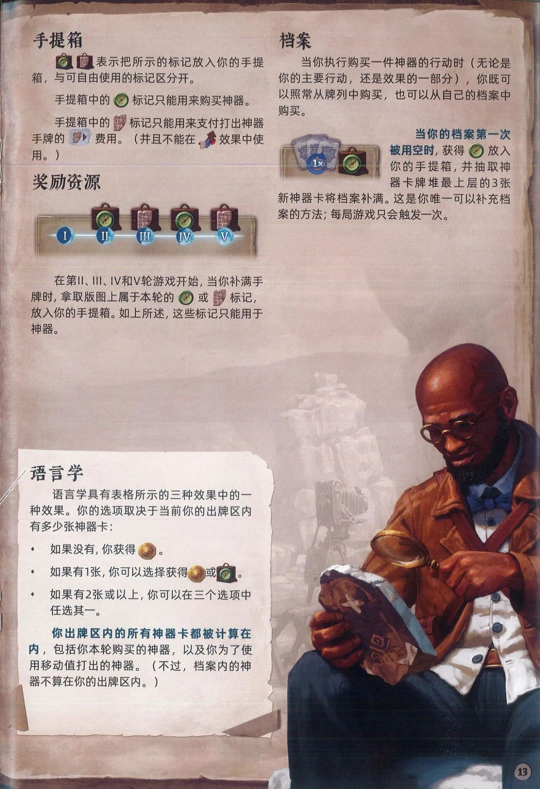
手提箱与档案
〔图标:装有绿色罗盘的手提箱〕〔图标:装有石板的手提箱〕表示把所示的标记放入你的手提箱,与可自由使用的标记区分开。
手提箱中的〔图标:绿色罗盘〕标记只能用来购买神器。
手提箱中的〔图标:石板〕标记只能用来支付打出神器手牌的〔图标:石板及▶箭头〕费用。(并且不能在〔图标:深色向上箭头与红、蓝色小标记〕效果中使用。)
奖励资源
〔图:牌列示意,一排五个格子:I、II、III、IV、V;第II格上方放置〔图标:装有绿色罗盘的手提箱〕,第III格上方放置〔图标:装有石板的手提箱〕,第IV格上方放置〔图标:装有绿色罗盘的手提箱〕,第V格上方放置〔图标:装有石板的手提箱〕〕
在第II、III、IV和V轮游戏开始,当你补满手牌时,拿取版图上属于本轮的〔图标:绿色罗盘〕或〔图标:石板〕标记,放入你的手提箱。如上所述,这些标记只能用于神器。
档案
当你执行购买一件神器的行动时(无论是你的主要行动,还是效果的一部分),你既可以照常从牌列中购买,也可以从自己的档案中购买。
〔图:示意图案——数张档案卡、带「1×」字样的蓝色环形箭头标记,以及装有绿色罗盘的手提箱〕
当你的档案第一次被用空时,获得〔图标:绿色罗盘〕放入你的手提箱,并抽取神器卡牌堆最上层的3张新神器卡将档案补满。这是你唯一可以补充档案的方法;每局游戏只会触发一次。
语言学
语言学具有表格所示的三种效果中的一种效果。你的选项取决于当前你的出牌区内有多少张神器卡:
- 如果没有,你获得〔图标:金币〕。
- 如果有1张,你可以选择获得〔图标:金币〕或〔图标:装有绿色罗盘的手提箱〕。
- 如果有2张或以上,你可以在三个选项中任选其一。
你出牌区内的所有神器卡都被计算在内,包括你本轮购买的神器,以及你为了使用移动值打出的神器。(不过,档案内的神器不算在你的出牌区内。)
〔图:右半页为大幅插画——教授坐在遗迹中,手持放大镜查看手册〕
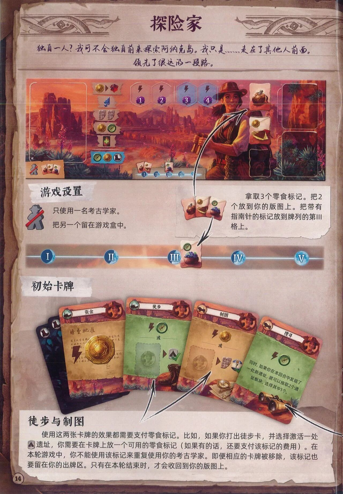
探险家
独自一人？我可不会独自前来探索阿纳克岛。我只是……走到了其他人前面。
领先了很远的一段路。
〔图：探险家玩家版图整幅横幅插画：左半为版图示意（左上有一个空画框；其右一列图标：〔图标：硬币〕→〔图标：红色宝石〕、〔图标：蓝色碎片〕、〔图标：两块刻字石板〕、〔图标：硬币与绿色指南针〕、〔图标：绿十字卡片〕，底部一条蓝色横条内有〔图标：指南针〕〔图标：硬币〕〔图标：靴子〕；版图上缘横排四枚紫色六边形闪电徽记，分别标数字1、2、3、4；版图下缘中央有小卡图案与罗马数字Ⅰ–Ⅴ的轨道示意；右半为戴帽探险家人物立绘，其身旁为版图的零食标记存放区〕。手绘箭头从版图右上方的零食标记存放区弯向下方游戏设置旁的零食标记照片。〕
游戏设置
〔图标：被斜线划掉的考古学家人偶〕
- 只使用一名考古学家。
- 把另一个留在游戏盒中。
〔图：三枚零食标记实物照片，旁有手绘箭头指向上方版图；零食标记为金色圆牌，其中一枚上带有绿色指南针图案〕
拿取3个零食标记。把2个放到你的版图上。把带有指南针的标记放到牌列的第Ⅲ格上。
〔图：牌列轨道示意：罗马数字Ⅰ、Ⅱ、Ⅲ、Ⅳ、Ⅴ各在一个蓝色圆圈中，由一条横线相连；带有指南针图案的零食标记放在第Ⅲ格上〕
初始卡牌
〔图：五张卡牌呈扇形展开的照片。最左侧一张背面朝上的深色卡牌，大部分被遮挡，上缘露出两枚圆形〔图标：靴子〕图案。其余四张为起始卡牌，每张卡左上角均有〔图标：圆形徽章内的轮船图案〕，右上角为戴帽探险家头像。每张卡面上都放有实物代币/图标，并有手绘箭头从「徒步」「制图」卡指向下方“徒步与制图”段落，右下角有双筒望远镜与指南针实物照片。〕
- 「资金」：卡面为一张米色文件，手写体标题「经费批准」，正文为手写体小字，字迹过小无法辨认；卡上印有〔图标：闪电〕，一枚金色零食标记实物代币覆盖在文字之上。
- 「徒步」：绿色卡面。上半为〔图标：闪电〕〔图标：指南针〕，分隔线下印“或”；下半为虚线框内的〔图标：探险家侧影〕→〔图标：靴子，带绿色对勾〕。
- 「制图」：米黄色卡面。上半为〔图标：闪电〕〔图标：金币〕，分隔线下印“或”；下半为虚线框内的〔图标：探险家侧影〕→〔图标：刻字石板〕〔图标：白色带「？」图案〕。
- 「搜索」：绿色卡面。上半为〔图标：闪电〕〔图标：指南针〕；下半文字（卡牌右缘被页面裁切，文字不完整）：同时，如果你在本回合中发〔?〕一处新遗址，就可以抽取2〔?〕址板块，选择其中1个。
徒步与制图
使用这两张卡牌的效果都需要支付零食标记。比如，如果你打出徒步卡，并选择激活一处〔图标：遗址〕遗址，你需要在卡牌上放一个可用的零食标记（如果有的话，还要支付该标记的费用）。在本轮游戏中，你不能使用该标记来重复使用你的考古学家。即便相应的卡牌被移除，该标记也要留在你的出牌区。只有在本轮结束时，才会收回到你的版图上。
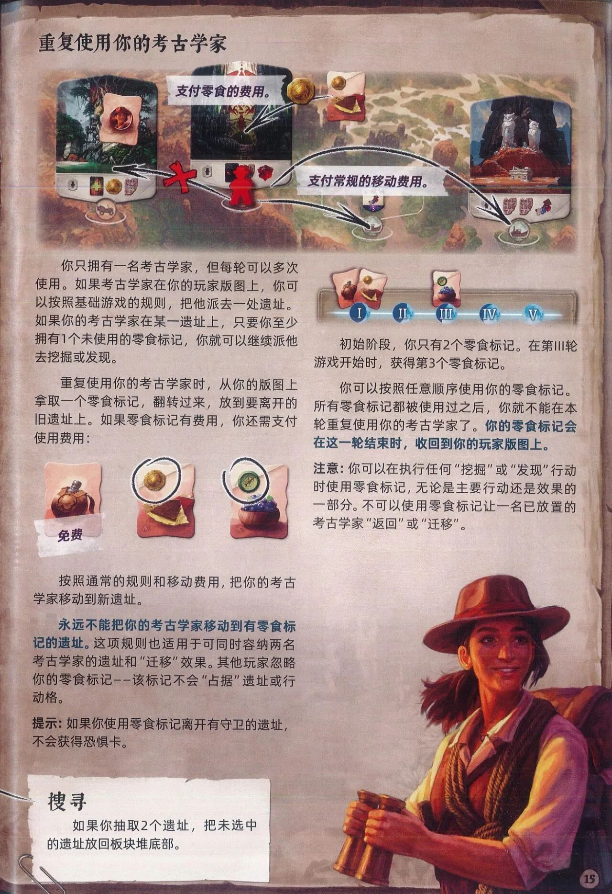
重复使用你的考古学家
〔图：版图局部俯视插画：左侧一块丛林遗址板块，其下方有卡牌与硬币；中央一块深色遗址板块上立着红色考古学家人偶；右侧一块有白色雕像的遗址板块。印刷标注“支付零食的费用。”箭头指向人偶所立的板块，标注旁绘有金币图案与两枚金色零食标记；印刷标注“支付常规的移动费用。”箭头指向路径上的移动指引。一条弧线箭头从人偶弯向右侧板块。〕
你只拥有一名考古学家，但每轮可以多次使用。如果考古学家在你的玩家版图上，你可以按照基础游戏的规则，把他派去一处遗址。如果你的考古学家在某一遗址上，只要你至少拥有1个未使用的零食标记，你就可以继续派他去挖掘或发现。
重复使用你的考古学家时，从你的版图上拿取一个零食标记，翻转过来，放到要离开的旧遗址上。如果零食标记有费用，你还需支付使用费用：
〔图：三张圆角卡片状图案：第一张为〔图标：水壶〕，其下纸片标签印“免费”；第二张为金色圆形〔图标：金币〕标记，放在巧克力块照片上，标记外有手绘圆圈；第三张为〔图标：绿色指南针〕标记，放在一碗蓝色果子照片上，标记外有手绘圆圈〕
按照通常的规则和移动费用，把你的考古学家移动到新遗址。
永远不能把你的考古学家移动到有零食标记的遗址。这项规则也适用于可同时容纳两名考古学家的遗址和“迁移”效果。其他玩家忽略你的零食标记——该标记不会“占据”遗址或行动格。
提示：如果你使用零食标记离开有守卫的遗址，不会获得恐惧卡。
〔图：牌列轨道：蓝色圆圈中的罗马数字Ⅰ、Ⅱ、Ⅲ、Ⅳ、Ⅴ由一条发光横线相连；第Ⅰ格与第Ⅲ格上方各立有卡牌图案；第Ⅲ格上的零食标记立放，图案为指南针与一碗果子〕
初始阶段，你只有2个零食标记。在第Ⅲ轮游戏开始时，获得第3个零食标记。
你可以按照任意顺序使用你的零食标记。所有零食标记都被使用过之后，你就不能在本轮重复使用你的考古学家了。你的零食标记会在这一轮结束时，收回到你的玩家版图上。
注意：你可以在执行任何“挖掘”或“发现”行动时使用零食标记，无论是主要行动还是效果的一部分。不可以使用零食标记让一名已放置的考古学家“返回”或“迁移”。
搜寻
如果你抽取2个遗址，把未选中的遗址放回板块堆底部。
〔图：页面右下为戴帽探险家人物大图（手持双筒望远镜）；左下角有回形针图案装饰〕
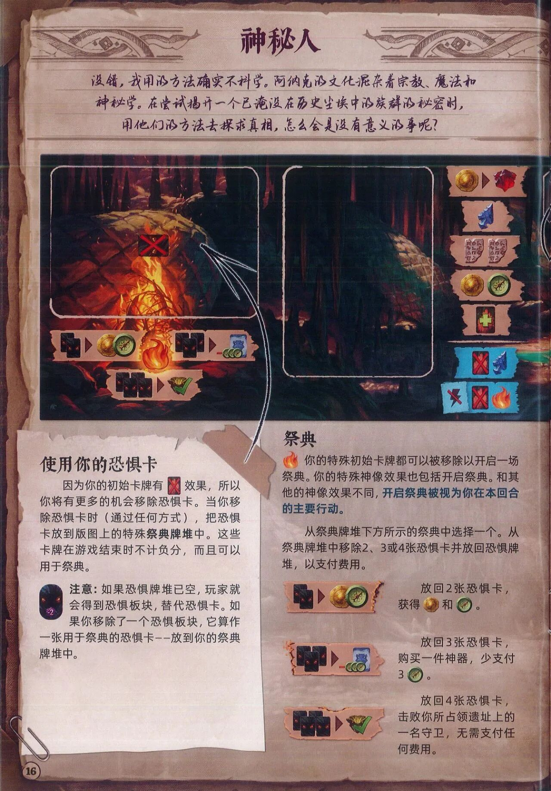
神秘人
没错,我用的方法确实不科学。阿纳克的文化混杂着宗教、魔法和神秘学。在尝试揭开一个已淹没在历史尘埃中的族群的秘密时,用他们的方法去探求真相,怎么会是没有意义的事呢?
〔图:整页上方为大插图——夜晚丛林中的石造遗迹与祭火,遗迹处标有〔图标:黑底红叉(恐惧卡)〕标记;插图下方并排印着三条费用纸条:2张恐惧卡→〔图标:金币〕+〔图标:绿色罗盘〕;3张恐惧卡→神器卡与3枚〔图标:绿色罗盘,罗盘前有减号,表示少支付〕;4张恐惧卡→守卫与绿色对勾。右侧竖排一列纸条图标:金币→红色晶石;蓝色黑曜石箭头;两块刻有文字的石板;金币+绿色罗盘;带绿色十字的卡牌;蓝底纸条上:红叉卡牌与蓝色晶石、划叉闪电、红叉卡牌、火焰〕
使用你的恐惧卡
因为你的初始卡牌有〔图标:黑底红叉(恐惧卡)〕效果,所以你将有更多的机会移除恐惧卡。当你移除恐惧卡时(通过任何方式),把恐惧卡放到版图上的特殊祭典牌堆中。这些卡牌在游戏结束时不计负分,而且可以用于祭典。
〔图标:黑色恐惧板块(面具图案,数值-2)〕 注意: 如果恐惧牌堆已空,玩家就会得到恐惧板块,替代恐惧卡。如果你移除了一个恐惧板块,它算作一张用于祭典的恐惧卡——放到你的祭典牌堆中。
祭典
〔图标:火焰〕你的特殊初始卡牌都可以被移除以开启一场祭典。你的特殊神像效果也包括开启祭典。和其他的神像效果不同,开启祭典被视为你在本回合的主要行动。
从祭典牌堆下方所示的祭典中选择一个。从祭典牌堆中移除2、3或4张恐惧卡并放回恐惧牌堆,以支付费用。
- 〔图:纸条图标:2张恐惧卡 → 〔图标:金币〕+〔图标:绿色罗盘〕〕放回2张恐惧卡,获得〔图标:金币〕和〔图标:绿色罗盘〕。
- 〔图:纸条图标:3张恐惧卡 → 神器卡与金币〕放回3张恐惧卡,购买一件神器,少支付3〔图标:绿色罗盘〕。
- 〔图:纸条图标:4张恐惧卡 → 守卫(羽冠头饰)与绿色对勾〕放回4张恐惧卡,击败你所占领遗址上的一名守卫,无需支付任何费用。
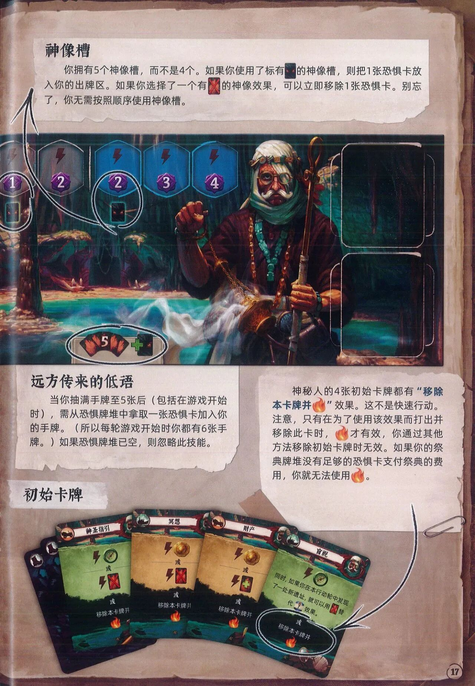
神像槽与初始卡牌
你拥有5个神像槽,而不是4个。如果你使用了标有〔图标:深色底、上有两个红色点状图案的小方形图标〕的神像槽,则把1张恐惧卡放入你的出牌区。如果你选择了一个有〔图标:暗红色卡形底、上有红色X形图案的小方形图标〕的神像效果,可以立即移除1张恐惧卡。别忘了,你无需按照顺序使用神像槽。
〔图:「神秘人」版块大幅插图:一名缠白色头巾、穿深色衣服的人物立于雨林水池前,身后为一排神像槽。5个神像槽均带闪电图标,槽下的紫色数字标记依次为1、2、2、3、4;左端数字1的槽与数字2的槽被白线圈出——前者下方可见〔图标:深色底两个红色点状图案〕(与数字2槽下方相同的恐惧卡图标),后者下方亦为〔图标:深色底两个红色点状图案〕。页面左上有一条黑色长箭头,从插图左端的圈出处指向「神像槽」段落。插图下方偏左另有白圈:一把标有数字5的恐惧卡扇形图标,其右侧为绿色加号图标与一张深色卡牌图案。插图右缘有两个空白的卡牌形状边框〕
远方传来的低语
当你抽满手牌至5张后(包括在游戏开始时),需从恐惧牌堆中拿取一张恐惧卡加入你的手牌。(所以每轮游戏开始时你都有6张手牌。)如果恐惧牌堆已空,则忽略此技能。
神秘人的4张初始卡牌都有「移除本卡牌并〔图标:火焰〕」效果。这不是快速行动。注意,只有在为了使用该效果而打出并移除此卡时,〔图标:火焰〕才有效,你通过其他方法移除初始卡牌时无效。如果你的祭典牌堆没有足够的恐惧卡支付祭典的费用,你就无法使用〔图标:火焰〕。
〔图注:上段文字位于页面右侧的对话气泡框内〕
初始卡牌
〔图:4张初始卡牌呈扇形展开,自左至右卡名依次为「神圣指引」「冥想」「财产」「直觉」;「神圣指引」「直觉」为绿色卡面,「冥想」「财产」为黄色卡面。「神圣指引」「冥想」两卡以图标给出两种效果(〔图标:闪电〕配〔图标:金币〕等图案,或〔图标:闪电〕配〔图标:暗红色卡形底红色X形图案〕);「财产」卡的两种效果为〔图标:闪电〕配〔图标:深色卡形上绿色十字加号〕。三卡均以「或 移除本卡牌并〔图标:火焰〕」为第三种效果。「直觉」卡上印有文字:"同时,如果你在本行动轮中发现了一处新遗址,就可以用〔图标:暗红色卡形底红色X形图案〕代替〔图标:带问号的圆形图案〕效果。「,其」或 移除本卡牌并〔图标:火焰〕"被白线圈出,一支黑色带白色晕边的箭头从右上指向此处〕
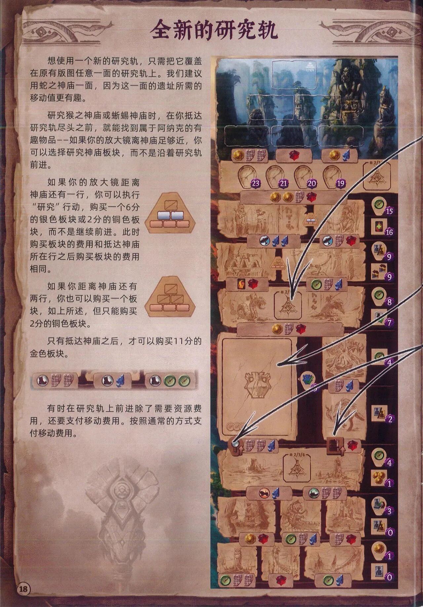
全新的研究轨
想使用一个新的研究轨,只需把它覆盖在原有版图任意一面的研究轨上。我们建议用蛇之神庙一面,因为这一面的遗址所需的移动值更有趣。
研究猴之神庙或蜥蜴神庙时,在你抵达研究轨尽头之前,就能找到属于阿纳克的有趣物品——如果你的放大镜离神庙足够近,你可以选择研究神庙板块,而不是沿着研究轨前进。
〔图:右侧为神庙板块堆叠示意图:上层1个划线空位,中层2块银色(蓝白色)板块,底层3块铜色板块〕如果你的放大镜距离神庙还有一行,你可以执行「研究」行动,购买一个6分的银色板块或2分的铜色板块,而不是继续前进。此时购买板块的费用和抵达神庙所在行之后购买板块的费用相同。
〔图:右侧为神庙板块堆叠示意图:上层1个划线空位,中层2个划线空位,底层3块铜色板块〕如果你距离神庙还有两行,你也可以购买一个板块,如上所述,但只能购买2分的铜色板块。
只有抵达神庙之后,才可以购买11分的金色板块。
〔图:一排三个研究轨空位费用示例,每组均以靴子〔图标:靴子(移动)〕开头:①靴子+两块刻字石板;②靴子+蓝色黑曜石;③靴子+两个绿色罗盘〕
有时在研究轨上前进除了需要资源费用,还要支付移动费用。按照通常的方式支付移动费用。
〔图:右半页为新研究轨的整幅照片:顶部数行标有23、21、20、19等数字的研究轨空位与神庙板块,板面上散布资源与费用图标,多条手绘箭头指向各处;右缘自上而下印有一列分数数字〕
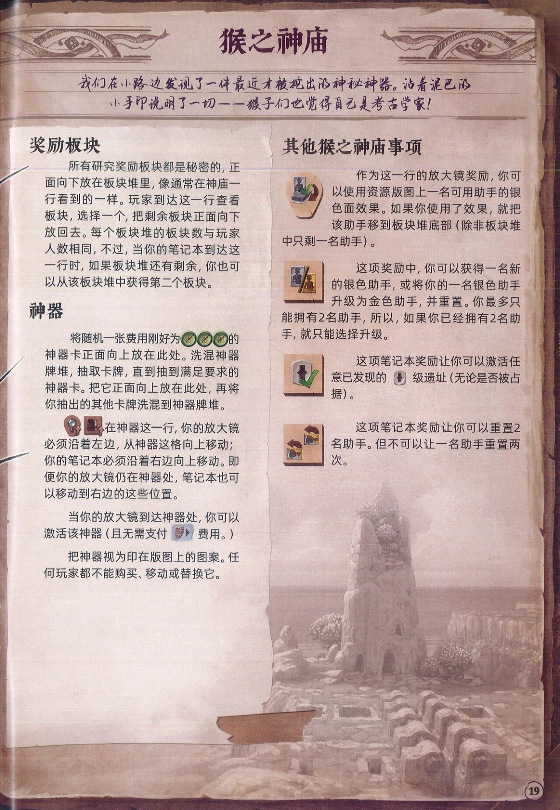
猴之神庙
我们在小路边发现了一件最近才被挖出的神秘神器。沿着泥巴的小手印说明了一切——猴子们也觉得自己是考古学家！
奖励板块
所有研究奖励板块都是秘密的，正面向下放在板块堆里，像通常在神庙一行看到的一样。玩家到达这一行查看板块，选择一个，把剩余板块正面向下放回去。每个板块堆的板块数与玩家人数相同，不过，当你的笔记本到达这一行时，如果板块堆还有剩余，你也可以从该板块堆中获得第二个板块。
神器
将随机一张费用刚好为〔图标:3枚绿色罗盘〕的神器卡正面向上放在此处。洗混神器牌堆，抽取卡牌，直到抽到满足要求的神器卡。把它正面向上放在此处，再将你抽出的其他卡牌洗混到神器牌堆。
〔图标:放大镜与向上箭头〕〔图标:笔记本与向上箭头〕在神器这一行，你的放大镜必须沿着左边，从神器这格向上移动；你的笔记本必须沿着右边向上移动。即便你的放大镜仍在神器处，笔记本也可以移动到右边的这些位置。
当你的放大镜到达神器处，你可以激活该神器（且无需支付〔图标:浅蓝色方形图标，内有棕色残片与暗红色右向三角〕费用。）
把神器视为印在版图上的图案。任何玩家都不能购买、移动或替换它。
其他猴之神庙事项
〔图标:放大镜形奖励板块，画面为助手立在牌堆上，带绿色对勾与深红色回转箭头〕作为这一行的放大镜奖励，你可以使用资源版图上一名可用助手的银色面效果。如果你使用了效果，就把该助手移到板块堆底部（除非板块堆中只剩一名助手）。
〔图标:方形板块，画面为银色助手与金色助手之间有一道斜杠〕这项奖励中，你可以获得一名新的银色助手，或将你的一名银色助手升级为金色助手，并重置。你最多只能拥有2名助手，所以，如果你已经拥有2名助手，就只能选择升级。
〔图标:方形板块，画面为白色守卫标记与绿色对勾〕这项笔记本奖励让你可以激活任意已发现的〔图标:守卫标记〕级遗址（无论是否被占据）。
〔图标:方形板块，画面为两名助手各带一个深红色回转箭头〕这项笔记本奖励让你可以重置2名助手。但不可以让一名助手重置两次。
〔图:页面下半部为大幅插图——丛林石崖间高耸的猴形石像神庙遗迹〕
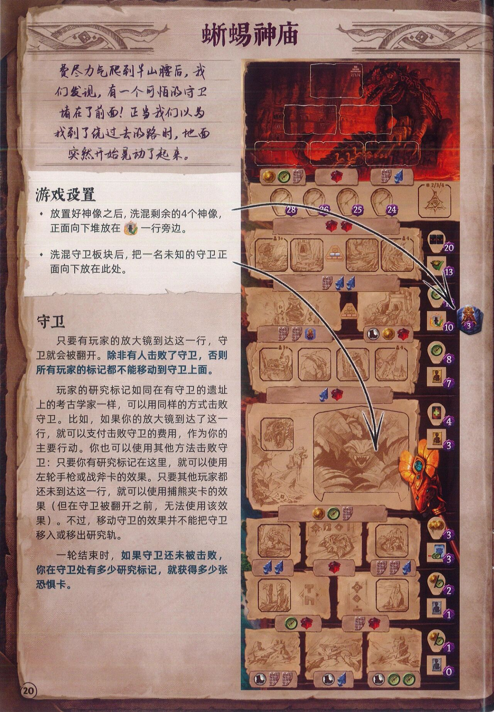
蜥蜴神庙
费尽力气爬到半山腰后,我们发现,有一个可怕的守卫堵在了前面!正当我们以为找到了绕过去的路时,地面突然开始晃动了起来。
游戏设置
- 放置好神像之后,洗混剩余的4个神像,正面向下堆放在〔图标:神像图标〕一行旁边。
- 洗混守卫板块后,把一名未知的守卫正面向下放在此处。
〔图:右侧为蜥蜴神庙版图的整页照片,版图上印有 28、26、25、24 及 20、13、10、8、7、4、3、3、3、3、2、1、1、0 等数字;两个箭头分别从上面两条设置说明指向版图中神像堆与未知守卫的放置位置。〕
守卫
只要有玩家的放大镜到达这一行,守卫就会被翻开。除非有人击败了守卫,否则所有玩家的标记都不能移动到守卫上面。
玩家的研究标记如同在有守卫的遗址上的考古学家一样,可以用同样的方式击败守卫。比如,如果你的放大镜到达了这一行,就可以支付击败守卫的费用,作为你的主要行动。你也可以使用其他方法击败守卫:只要你有研究标记在这里,就可以使用左轮手枪或战斧卡的效果。只要其他玩家都还未到达这一行,就可以使用捕熊夹卡的效果(但在守卫被翻开之前,无法使用该效果)。不过,移动守卫的效果并不能把守卫移入或移出研究轨。
一轮结束时,如果守卫还未被击败,你在守卫处有多少研究标记,就获得多少张恐惧卡。
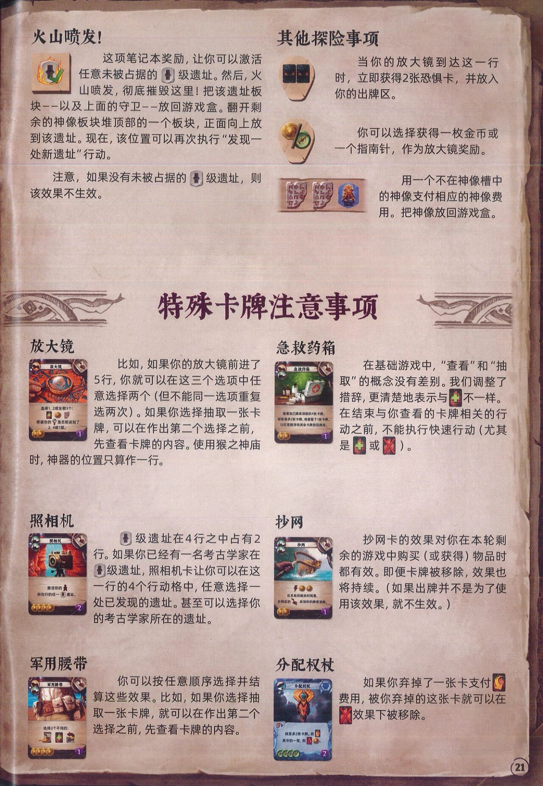
特殊卡牌注意事项
火山喷发!
〔图:笔记本奖励图标——燃烧的盾形石碑、上有深色沙漏形遗址等级符号、附绿色对勾〕
这项笔记本奖励,让你可以激活任意未被占据的〔图标:深色沙漏形遗址等级符号〕级遗址。然后,火山喷发,彻底摧毁这里!把该遗址板块——以及上面的守卫——放回游戏盒。翻开剩余的神像板块堆顶部的一个板块,正面向上放到该遗址。现在,该位置可以再次执行“发现一处新遗址”行动。
注意,如果没有未被占据的〔图标:深色沙漏形遗址等级符号〕级遗址,则该效果不生效。
其他探险事项
- 〔图:两张恐惧卡图示〕当你的放大镜到达这一行时,立即获得2张恐惧卡,并放入你的出牌区。
- 〔图:金币与指南针图示〕你可以选择获得一枚金币或一个指南针,作为放大镜奖励。
- 〔图:两块石板与一个神像图示〕用一个不在神像槽中的神像支付相应的神像费用。把神像放回游戏盒。
放大镜
〔图:「放大镜」卡牌〕
比如,如果你的放大镜前进了5行,你就可以在这三个选项中任意选择两个(但不能同一选项重复选两次)。如果你选择抽取一张卡牌,可以在作出第二个选择之前,先查看卡牌的内容。使用猴之神庙时,神器的位置只算作一行。
急救药箱
〔图:「急救药箱」卡牌〕
在基础游戏中,“查看”和“抽取”的概念没有差别。我们调整了措辞,更清楚地表示与〔图标:深色底绿色十字符号〕不一样。在结束与你查看的卡牌相关的行动之前,不能执行快速行动(尤其是〔图标:深色底绿色十字符号〕或〔图标:深色底红色叉形符号〕)。
照相机
〔图:「照相机」卡牌〕
〔图标:深色沙漏形遗址等级符号〕级遗址在4行之中占有2行。如果你已经有一名考古学家在〔图标:深色沙漏形遗址等级符号〕级遗址,照相机卡让你可以在这一行的4个行动格中,任意选择一处已发现的遗址。甚至可以选择你的考古学家所在的遗址。
抄网
〔图:「抄网」卡牌〕
抄网卡的效果对你在本轮剩余的游戏中购买(或获得)物品时都有效。即便卡牌被移除,效果也将持续。(如果出牌并不是为了使用该效果,就不生效。)
军用腰带
〔图:「军用腰带」卡牌〕
你可以按任意顺序选择并结算这些效果。比如,如果你选择抽取一张卡牌,就可以在作出第二个选择之前,先查看卡牌的内容。
分配权杖
〔图:「分配权杖」卡牌〕
如果你弃掉了一张卡支付〔图标:橙色火焰状符号〕费用,被你弃掉的这张卡就可以在〔图标:深色底红色叉形符号〕效果下被移除。
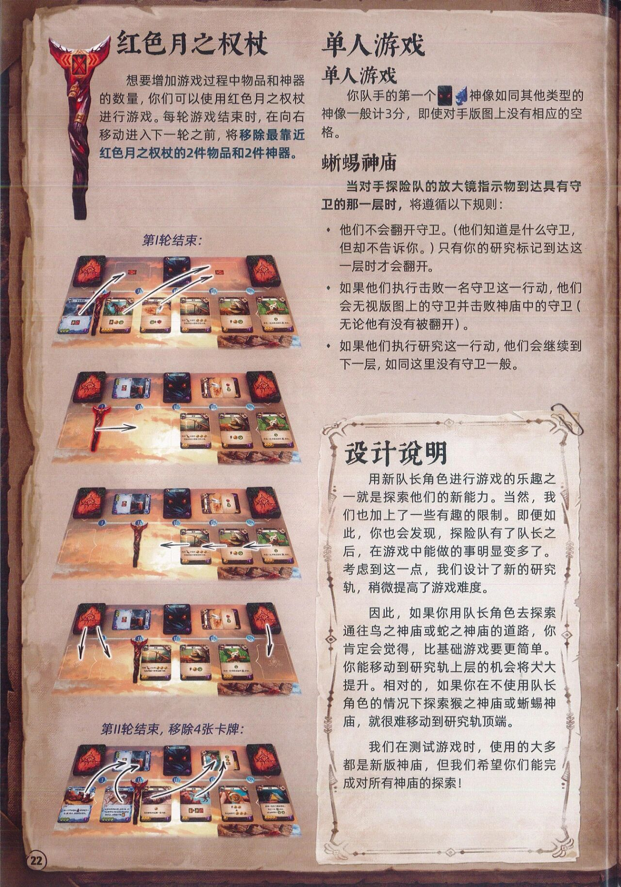
红色月之权杖与单人游戏
〔图:「红色月之权杖」配件照片〕
想要增加游戏过程中物品和神器的数量,你们可以使用红色月之权杖进行游戏。每轮游戏结束时,在向右移动进入下一轮之前,将移除最靠近红色月之权杖的2件物品和2件神器。
第1轮结束:
〔图:版图照片,多支白色箭头从下排卡牌指向上排〕
〔图:版图照片——红色月之权杖立于版图左端,一支白色长箭头指向右侧〕
〔图:版图照片——数支白色箭头指向左侧〕
〔图:版图照片——数支白色箭头指向下方〕
第II轮结束,移除4张卡牌:
〔图:版图照片——数支白色箭头指向下方空位〕
单人游戏
你队手的第一个〔图标:黑色恐惧卡图示〕〔图标:蓝色水晶状图示〕神像如同其他类型的神像一般计3分,即使对手版图上没有相应的空格。
蜥蜴神庙
当对手探险队的放大镜指示物到达具有守卫的那一层时,将遵循以下规则:
- 他们不会翻开守卫。(他们知道是什么守卫,但却不告诉你。)只有你的研究标记到达这一层时才会翻开。
- 如果他们执行击败一名守卫这一行动,他们会无视版图上的守卫并击败神庙中的守卫(无论他有没有被翻开)。
- 如果他们执行研究这一行动,他们会继续到下一层,如同这里没有守卫一般。
用新队长角色进行游戏的乐趣之一就是探索他们的新能力。当然,我们也加上了一些有趣的限制。即便如此,你也会发现,探险队有了队长之后,在游戏中能做的事明显变多了。考虑到这一点,我们设计了新的研究轨,稍微提高了游戏难度。
因此,如果你用队长角色去探索通往鸟之神庙或蛇之神庙的道路,你肯定会觉得,比基础游戏要更简单。你能移动到研究轨上层的机会将大大提升。相对的,如果你在不使用队长角色的情况下探索猴之神庙或蜥蜴神庙,就很难移动到研究轨顶端。
我们在测试游戏时,使用的大多都是新版神庙,但我们希望你们能完成对所有神庙的探索!
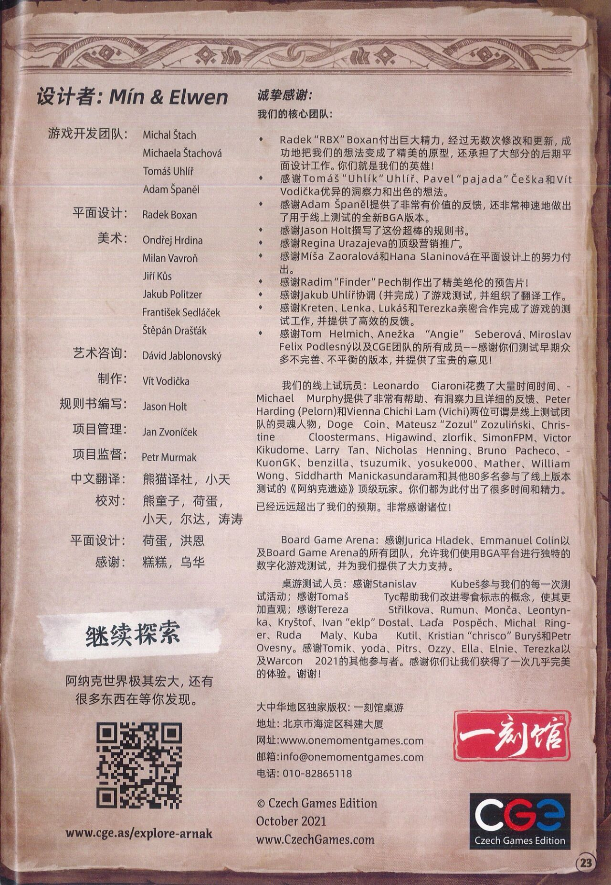
设计者与致谢
游戏开发团队:
- Michal Stach
- Michaela Štachová
- Tomáš Uhlíř
- Adam Španěl
平面设计:
- Radek Boxan
美术:
- Ondřej Hrdina
- Milan Vavroň
- Jiří Kůs
- Jakub Politzer
- František Sedláček
- Štěpán Draštík
艺术咨询:
- Dávid Jabloňovský
制作:
- Vit Vodička
规则书编写:
- Jason Holt
项目管理:
- Jan Zvoníček
项目监督:
- Petr Murmak
中文翻译:
- 熊猫译社,小天
校对:
- 熊童子,荷蛋,小天,尔达,涛涛
平面设计:
- 荷蛋,洪思
感谢:
- 糕糕,乌华
诚挚感谢
我们的核心团队:
- Radek 「RBX」 Boxan付出巨大精力,经过无数次修改和更新,成功地把我们的想法变成了精美的原型,还承担了大部分的后期平面设计工作。你们就是我们的英雄!
- 感谢Tomáš 「Uhlík」 Uhlíř, Pavel 「pajada」 Češka和Vit Vodička优异的洞察力和出色的想法。
- 感谢Adam Španěl提供了非常有价值的反馈,还非常神速地做出了用于线上测试的全新BGA版本。
- 感谢Jason Holt撰写了这份超棒的规则书。
- 感谢Regína Urazajeva的顶级营销推广。
- 感谢Miša Zaoralová和Hana Slaninová在平面设计上的努力付出。
- 感谢Radim 「Finder」 Pech制作出了精美绝伦的预告片!
- 感谢Jakub Uhlíř协调(并完成了)游戏测试,并组织了翻译工作。
- 感谢Kreten、Lenka、Lukáš和Terezka亲密合作完成了游戏的测试工作,并提出了高效的反馈。
- 感谢Tom Helmich, Anezka 「Angie」 Seberová, Miroslav Felix Podlesný以及CGE团队的所有成员——感谢你们测试早期众多不完整、不平衡的版本,并提供了宝贵的意见!
我们的线上试玩员:Leonardo Ciaroni花费了大量时间时间、- Michael Murphy提供了非常有帮助、有洞察力且详细的反馈。Peter Harding (Pelorn)和Vienna Chichi Lam (Vichi)两位可算是线上测试团队的灵魂人物。Doge, Coin, Mateusz 「Zozul」 Zozuliński, Christine Cloostermans、Higawind、zlorfik、SimonFPM、Victor Kikudome、Larry Tan、Nicholas Henning、Bruno Pacheco、- KuonGK、benzilla、tsuzumik、yosuke000、Mather、William Wong、Siddharth Manickasundaram和其他80多名参与了线上版本测试的《阿纳克遗迹》顶级玩家。你们都为此付出了很多时间和精力。已经远远超出了我们的预期。非常感谢诸位!
Board Game Arena:感谢jurica Hladek, Emmanuel Colin以及Board Game Arena的所有团队,允许我们使用BGA平台进行独特的数字化游戏测试,并为我们提供了大力支持。
桌游测试人员:感谢Stanislav Kubeš参与我们的每一次测试活动;感谢Tomáš Tyc帮助我们改进零食标志的概念,使其更加直观;感谢Tereza Štíková, Ruman, Monca, Leontýnka, Krýštof, Ivan 「ekip」 Dostal, Lada Pospěch, Michael Ringer、Ruda Malý, Kuba Kutil, Kristián 「chrisco」 Buryš和Petr Ovesný。感谢Tomik、yoda、Pitrs、Ozzy、Ella、Elnie、Terezka以及Warcon 2021的其他参与者。感谢你们让我们获得了一次几乎完美的体验。谢谢!
继续探索
阿纳克世界极其宏大,还有很多东西在等你发现。
www.cge.as/explore-arnak
大中华地区独家版权:一刻馆桌游
地址:北京市海淀区科建大厦
网址:www.onemomentgames.com
邮箱:info@onemomentgames.com
电话:010-82865118
© Czech Games Edition
October 2021
www.CzechGames.com
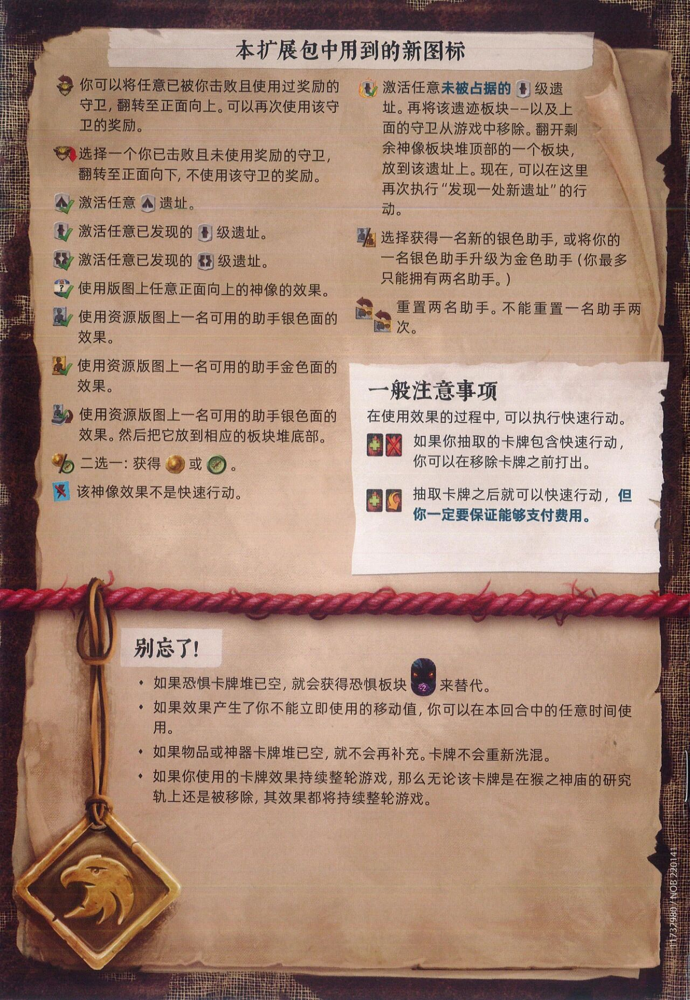
本扩展包中用到的新图标(衬页)
- 〔图标:守卫头像,带绿色对勾〕你可以将任意已被你击败且使用过奖励的守卫,翻转至正面向上。可以再次使用该守卫的奖励。
- 〔图标:守卫头像附红色翻转箭头〕选择一个你已击败且未使用奖励的守卫,翻转至正面向下,不使用该守卫的奖励。
- 〔图标:遗址图标,带绿色对勾〕激活任意〔图标:遗址图标〕遗址。
- 〔图标:盾形石碑上单个沙漏形等级符号,带绿色对勾〕激活任意已发现的〔图标:盾形石碑上单个沙漏形等级符号〕级遗址。
- 〔图标:盾形石碑上两个并排沙漏形等级符号,带绿色对勾〕激活任意已发现的〔图标:盾形石碑上两个并排沙漏形等级符号〕级遗址。
- 〔图标:带问号的神像板块图标,带绿色对勾〕使用版图上任意正面向上的神像的效果。
- 〔图标:银色助手图标〕使用资源版图上一名可用的助手银色面的效果。
- 〔图标:金色助手图标〕使用资源版图上一名可用的助手金色面的效果。
- 〔图标:银色助手图标附红色弧形箭头〕使用资源版图上一名可用的助手银色面的效果。然后把它放到相应的板块堆底部。
- 〔图标:金币+斜杠+指南针组合图标〕二选一:获得〔图标:金币图标〕或〔图标:绿色罗盘(指南针)图标〕。
- 〔图标:蓝底黑色闪电符号被红色斜线划掉〕该神像效果不是快速行动。
- 〔图标:燃烧的盾形石碑、上有单个沙漏形等级符号、附绿色对勾〕激活任意未被占据的〔图标:盾形石碑上单个沙漏形等级符号〕级遗址。再将该遗址板块——以及上面的守卫从游戏中移除。翻开剩余神像板块堆顶部的一个板块,放到该遗址上。现在,可以在这里再次执行「发现一处新遗址」的行动。
- 〔图标:银色助手卡与金色助手卡以斜杠分隔〕选择获得一名新的银色助手,或将你的一名银色助手升级为金色助手(你最多只能拥有两名助手。)
- 〔图标:两名助手图标(带循环箭头)〕重置两名助手。不能重置一名助手两次。
一般注意事项
在使用效果的过程中,可以执行快速行动。
- 〔图标:两张卡牌图标(其一为红色叉)〕如果你抽取的卡牌包含快速行动,你可以在移除卡牌之前打出。
- 〔图标:两张卡牌图标(绿色与橙色标记)〕抽取卡牌之后就可以快速行动,但你一定要保证能够支付费用。
别忘了!
- 如果恐惧卡牌堆已空,就会获得恐惧板块〔图标:恐惧板块图标〕来替代。
- 如果效果产生了你不能立即使用的移动值,你可以在本回合中的任意时间使用。
- 如果物品或神器卡牌堆已空,就不会再补充。卡牌不会重新洗混。
- 如果你使用的卡牌效果持续整轮游戏,那么无论该卡牌是在猴之神庙的研究轨上还是被移除,其效果都将持续整轮游戏。